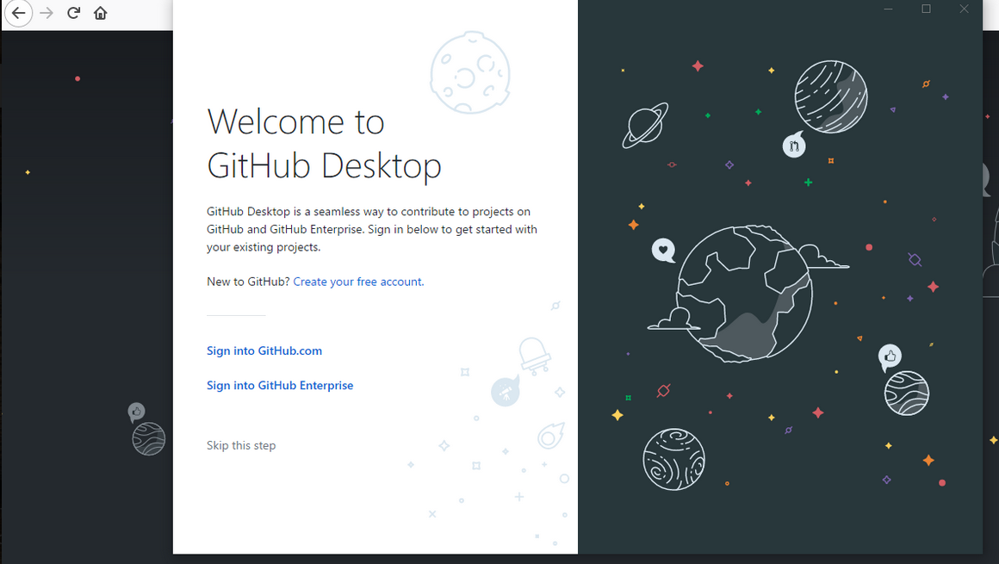
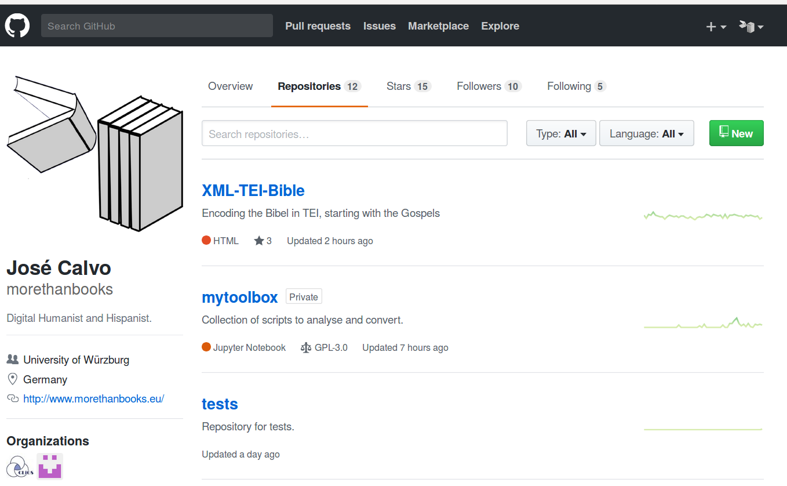

<!doctype html>
<html lang="en">
<head>
<meta charset="utf-8">
    <title>Publishing Data using GitHub </title>
<meta name="author" content="José Calvo">
<meta name="description" content="Slides">
<meta name="apple-mobile-web-app-capable" content="yes">
<meta name="apple-mobile-web-app-status-bar-style" content="black-translucent">
<meta name="viewport" content="width=device-width, initial-scale=1.0, maximum-scale=1.0, user-scalable=no, minimal-ui">
<link rel="stylesheet" href="css/reveal.css">
<link rel="stylesheet" href="css/theme/simple.css" id="theme">
<link rel="stylesheet" href="lib/css/zenburn.css">
<script>
var link = document.createElement( 'link' );
link.rel = 'stylesheet';
link.type = 'text/css';
link.href = window.location.search.match( /print-pdf/gi ) ? 'css/print/pdf.css' : 'css/print/paper.css';
document.getElementsByTagName( 'head' )[0].appendChild( link );
</script>
<!--[if lt IE 9]>
<script src="lib/js/html5shiv.js"></script>
<![endif]-->
</head>

<body>
<div class="reveal">
<div class="slides">
<section data-markdown="" data-separator="^\n---\n" data-separator-vertical="^\n--\n" data-charset="utf-8">
<script type="text/template">

<!--  vvvvv THIS IS WHERE THE CONTENT GOES! vvvvvvv  -->

### Publishing Data using GitHub 

<hr/>
<small><b>José Calvo Tello</b></small>
<br/>
<small>University of Würzburg, 2018</small>
<br/>
<hr/>
<small>Presentation: https://morethanbooks.github.io/workshop-github/</small>
<p></img>&nbsp;&nbsp;&nbsp;&nbsp;&nbsp;&nbsp;</img>&nbsp;&nbsp;&nbsp;&nbsp;&nbsp;&nbsp;</img></p>

---
## Content

* Overview of GitHub (45 minutes)
    * Main Features
    * Main Work Flow
    * New Repositories
* Hands-on (45 minutes)
* Publishing our Data (45 minutes)
    * Branches
    * Release
    * Zenodo
    * GitHub Pages
    * More  Features
* Hands-on (45 minutes)

---
## GitHub

--
## GitHub

* "GitHub is a code hosting platform for version control and collaboration. It lets you and others work together on projects from anywhere."
<a href="https://guides.github.com/activities/hello-world/">GitHub Guides</a>
* Publishing code and data

--
## References
* <a href="https://guides.github.com/activities/hello-world/">GitHub Guides</a>
* <a href="https://programminghistorian.org/lessons/getting-started-with-github-desktop/">An Introduction to Version Control Using GitHub Desktop</a>, by Daniel van Strien (<i>Programming Historian</i>)
* <a href="http://rogerdudler.github.io/git-guide/"> git - the simple guide</a>, by Roger Dudler

--
## Examples
* TEI

</img>

--
## Examples
* Stylo


--
## Examples
* DLINA


--
## Examples
* CLiGS Textbox


--
## Examples
* XML-TEI Bible


---
## Getting Ready

--
## Account

* https://github.com/

--
## Installing
* <a href="https://gist.github.com/derhuerst/1b15ff4652a867391f03">Installing Git, the easy way</a>, by Jannis Redmann

--
## Windows vs Mac and Linux

* Command line
* sudo apt-get install git


--
## Windows vs Mac and Linux

* GitHub Desktop



--
## Repositories
* "A repository is usually used to organize a single project. Repositories can contain folders and files, images, videos, spreadsheets, and data sets – anything your project needs."
<a href="https://guides.github.com/activities/hello-world/">GitHub Guides</a>

--
## Clone
* git clone https://github.com/cligs/textbox.git
* git clone https://github.com/morethanbooks/tests.git


--
## Clone
* File > clone repository


---
## Main Work Flow

--
## Main Work Flow

<ol>
	<li>pull (git pull)</li>
	<li>(change something in your project)</li>
	<li>add (git add -A)</li>
	<li>commit (git commit -m "New documentation")</li>
	<li>push (gut push)</li>
</ol>

--
## Main Work Flow (Ubuntu)


--
## Main Work Flow (Windows)

<ol>
	<li>fetch</li>
	<li>(do something)</li>
	<li>commit</li>
	<li>push</li>
</ol>

--
## Main Work Flow (Windows)

* (add)


--
## Main Work Flow (Windows)

* commit


--
## Main Work Flow (Windows)

* push


--
## Going Back

* Repository > Commits


---
## New Repositories


--
## New Repositories


--
## New Repositories


--
## First push

* git add -A
* git commit -m "First commit"
* git push -u origin master

---
## Private Repositories

--
## Private repositories

* Private repositories
* GitHub Education (<a href="https://education.github.com/discount_requests/new">link</a>)


--
## GitLab

* GitLab (<a href="https://about.gitlab.com/">link</a>)
* <a href="https://usersnap.com/blog/gitlab-github/">GitLab vs GitHub: Key differences & similarities</a>, by Thomas Peham
* <a href="https://www.upwork.com/hiring/development/gitlab-vs-github-how-are-they-different/">GitLab vs. GitHub: How Are They Different?</a>, by Carey Wodehouse


---
## Hands-on

* Create an account
* Install Git / GitHub Desktop
* Clone a couple of other people's repositories
* Create a new repository
* Start making changes and commit them
* Push the commits
* See your commits in Browser
* Go back to previous versions of your own repository
* Clone it somewhere else in your computer


---
## Publishing our Data

--
## Publishing our Data

* Branches
* Releases
* Zenodo
* GitHub Pages
* More Features

--
## Real Life with GitHub


---
## Versions of a project: Branches

--
## Versions of a project


--
## Versions of a project

* master
	* dh2016
		* testing	
	* dhd2017
		* dh2017
			* use this one
	* dh2018

--
## Branch

* "Branching is the way to work on different versions of a repository at one time. By default your repository has one branch named master which is considered to be the definitive branch."
<a href="https://guides.github.com/activities/hello-world/">GitHub Guides</a>

--
## New Branch


--
## New Branch


--
## New Branch

* Linux: git checkout NameOfBranch
* Windows: "Current branch"


--
## Beware of Branches!


* Suggestions:
	* master and develop
	* master and specificFeature

--
## Merging Branches

* Different branches


--
## Merging Branches

* Pull request


--
## Merging Branches

* Confirm Merging


--
## Merging Branches

* Diff


--
## Merging Branches

* Merged


--
## Merged Branch


--
## Merged Branch

* Delete branch


--
## Pull/Fetch into your Git


* git pull
* git branch -d oldBranch

---
## Releases

--
## Releases

* "Releases are GitHub's way of packaging and providing software to your users. You can think of it as a replacement to using downloads to provide software."
<a href="https://help.github.com/articles/about-releases/">source</a>

--
## Releases

* Repository > Releases > Draft a new release


--
## Releases

* Repository > Releases > Draft a new release


--
## Releases

* Repository > Releases


---
## Long Term Storing

--
## Zenodo

* "The OpenAIRE project, in the vanguard of the open access and open data movements in Europe was commissioned by the EC to support their nascent Open Data policy by providing a catch-all repository for EC funded research. CERN, an OpenAIRE partner and pioneer in open source, open access and open data, provided this capability and Zenodo was launched in May 2013."

<a href="http://about.zenodo.org/">Source</a>


--
## Zenodo

<ol>
	<li>Sign-in</li>
	<li>Enable repository</li>
	<li>Make new release</li>
	<li>Get DOI</li>
</ol>


--
## Zenodo


--
## Zenodo


--
## Zenodo


--
## Zenodo


--
## DARIAH-DE Repository

* <a href="https://repository.de.dariah.eu/publikator/">link</a>
* Organization
* Sign-in using your credentials

---
## GitHub Pages


--
## GitHub Pages

* "GitHub Pages are public webpages hosted and easily published through GitHub. " <a href="https://guides.github.com/features/pages/">Source</a>
* https://morethanbooks.github.io/workshop-github
* https://dlina.github.io/

--
## GitHub Pages

* Create GitHub-pages-Repository: username.github.io
* Branch of repository: master
* Repository: index.html
* Repository > Settings > GitHub Pages
* username.github.io

--
## GitHub Pages


--
## GitHub Pages


--
## Other repository in GitHub.io

* For example for <a href="https://github.com/hakimel/reveal.js/">Reveal Presentations</a>
* https://morethanbooks.github.io/workshop-github

--
## Other repository in GitHub.io

* Repository: NameOfRepo
* New branch of repository: gh-pages
* gh-pages as Default branch
* Repository > Settings > GitHub Pages
* username.github.io/NameOfRepo

---
## Useful features

--
## Organizations


--
## Notebooks


* <a href="https://github.com/jakevdp/PythonDataScienceHandbook">*Python Data Science Handbook*</a> by Jave VanderPlas 

--
## Tables


---
## GitHub

* Overview of GitHub 
    * Main Features
    * Main  Work Flow
    * New Repositories
* Publishing our Data
    * Branches
    * Release
    * Zenodo
    * GitHub Pages
    * More  Features
* Hands-on (45 minutes)

--
## GitHub


---
## Hands-on

* Make a new branch
* Commit some changes to it
* Merge the branches
* Make a release
* Create a GitHub Pages repository
* Go to username.github.io and confirm that you are seeing your index.html
**If you have material:**
* Sign in Zenodo in
* Enable your repository
* Make a release and publish it through Zenodo


<!--^^^^^^^ DON'T TOUCH UNLESS YOU KNOW WHAT YOU'RE DOING :-) ^^^^^^^-->

</script>
</section>
</div>
</div>

<script src="lib/js/head.min.js"></script>
<script src="js/reveal.js"></script>
<script>
// Full list of configuration options available at:
// https://github.com/hakimel/reveal.js#configuration
Reveal.initialize({
    controls: true,
    progress: true,
    history: true,
    center: true,
    transition: 'slide', // none/fade/slide/convex/concave/zoom
    // Optional reveal.js plugins
    dependencies: [
        { src: 'lib/js/classList.js', condition: function() { return !document.body.classList; } },
        { src: 'plugin/markdown/marked.js', condition: function() { return !!document.querySelector( '[data-markdown]' ); } },
        { src: 'plugin/markdown/markdown.js', condition: function() { return !!document.querySelector( '[data-markdown]' ); } },
        { src: 'plugin/highlight/highlight.js', async: true, callback: function() { hljs.initHighlightingOnLoad(); } },
        { src: 'plugin/zoom-js/zoom.js', async: true },
        { src: 'plugin/notes/notes.js', async: true }
        ]
    });
</script>
</body>
</html>
